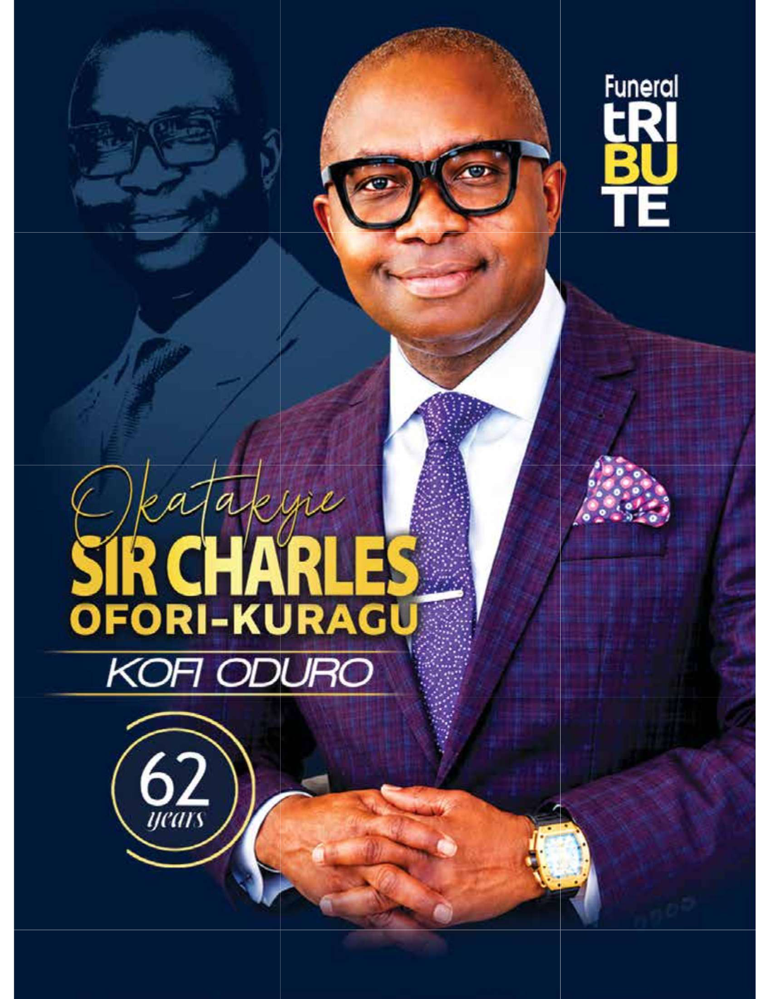

In Loving Memory Of
Okatakyie Sir Charles
Ofori Kuragu
"I have fought the good fight, I have finished the race, I have kept the faith."
— 2 Timothy 4:7
March 31, 1964 · — · February 2026

Replace with a favourite portrait photo
A Life of Excellence, Faith & Service
Okatakyie Sir Charles Ofori Kuragu was a distinguished leader, entrepreneur, devoted family man, and faithful servant of God whose life was defined by excellence, integrity, and service to humanity. The fourth of twelve children born to the late Mr. Daniel Akwasi Ofori Kuragu and Madam Ama Kwaah, he carried his name — given by Mr. Leslie Mensah and caught on "like wildfire" — with quiet nobility, innate dignity, and profound grace.
From the classrooms of Tetrem and Opoku Ware School to KNUST, DePaul University in Chicago, the boardrooms of AT&T, and the halls of the Kofi Annan Centre of Excellence in ICT, Sir Charles built institutions and people with equal care. He co-founded ICON360 and Build2Last, helped lead St. Georges International School, served as Financial Secretary of Christ's Oasis Ministries, and championed education for the less privileged.
A natural peacemaker and unifier — fondly called the "Prime Minister" of Oasis, "Alhaji" by his schoolmates, and "Mr. Responsible" by his beloved wife — he approached every situation with fairness, patience, and discernment. His legacy lives on in the House of Dominion, the businesses he built, and the countless lives he touched.
61
Years of Life
4
Children
12
Siblings
Journey Through the Years
Milestones of a remarkable life
1964
A Star is Born
Born on March 31st — the fourth of twelve children, and the first son of Daniel Akwasi Ofori Kuragu and Madam Ama Kwaah.
1983 – 1985
Foundations of Learning
Completed secondary education at Tetrem Secondary School (1983), then sixth form at Opoku Ware Secondary School, OWASS (1985).
1990
KNUST & a Lifelong Love
Earned a BSc in Planning from KNUST as a proud member of Republic Hall — where a blind date with Nana Konadu led to his words: "I want to marry you."
1994
A Sacred Union
Married the love of his life, Nana Konadu. Their union was blessed with twins Aaron and Audrey, and later Charles Jr. and Benjamin.
1997
Called to Serve God's House
Joined Christ's Oasis Ministries in Chicago, where he faithfully served as Financial Secretary until his passing — helping build the House of Dominion.
1990s – 2000s
A Transatlantic Career
MBA from DePaul University; rose from Regional Financial & Budget Analyst to Business Operations Manager at AT&T; Vice President of Symtek Telecom Inc.
2003
Serving the Homeland
Returned to Ghana as the first Director of Finance & Administration of the Kofi Annan Centre of Excellence in ICT — also serving as acting CEO in its formative years.
2000s – 2020s
The Visionary Entrepreneur
Co-owned ICON360 (telecom) and Build2Last (construction) with Opanin Kwaku Oware Banin, and co-managed St. Georges International School, Kumasi, with his wife.
2026
Called Home
After seven weeks of illness — surrounded by his wife, family, and prayer — Sir Charles departed peacefully to be with the Lord, in February 2026.
The Many Hats He Wore
Husband & Father
"Mr. Responsible" — provider, pillar, confidant
Executive & Entrepreneur
AT&T, Symtek, ICON360, Build2Last, St. Georges
Servant of God
Financial Secretary, Christ's Oasis Ministries
Community Leader
Akatakyie President, Tetremman VP, mentor to many
Celebration of Life
Funeral Service Details
🕊️ Service
To Be Announced
Christ's Oasis Ministries
🌿 Interment
Tetrem, Ashanti Region
His beloved hometown
🍽️ Reception
Family Residence
All are welcome
Roots & Branches
The Ofori Kuragu Family Lineage
Mr. Daniel Akwasi Ofori Kuragu
Late · d. 2000
Patriarch & Father
Madam Ama Kwaah
"Maame Ama" · Living
Matriarch & Mother
Parents of twelve children — Sir Charles was the fourth child and first son

Okatakyie Sir Charles Ofori Kuragu ✝
March 31, 1964 – February 2026
"Kofi Duro" · "Alhaji" · "Sir Charles"

Mrs. Adwoa Konadu Ofori-Kuragu
"Nana Konadu"
Beloved Wife of 32 Years · m. 1994
Aaron Ofori-Kuragu
"Atta Panin" · Firstborn Twin (Son)
Audrey Ofori-Kuragu
"Ataa Kakra" · Firstborn Twin (Daughter)
Charles Ofori-Kuragu Jr.
"Chuck" · Third Child (Son)
Benjamin Ofori-Kuragu
"Yaw Barima Bonsu" · Last Son
His Extended Family
Eleven siblings — "Bra Charles," "Kofi," "Abrantee" — and a wide circle of nephews and nieces who called him "Wofa pa" (good uncle). When their father passed in 2000, he stepped into the role of both father and brother without hesitation, living by his words: "No one is left behind in this family." His cousins, including Nana Serwaah Wiafe whom he called his little sister, and adopted family like Joycelin ("Araba"), knew him as a constant, safe presence for over 30 years.
Words From the Heart
Remembrance & Tributes
Leave a Tribute
Share your memories, prayers, and messages of comfort. Tributes appear instantly below.
Tributes
Moments We Cherish
Photo Gallery
Click any photo to view it larger. Replace the placeholders with real photos of Sir Charles.
Moving Memories
Video Gallery
Click a video to play. Swap the placeholder links for your own hosted videos.
Support the Family
Donations & Contributions
The family is deeply grateful for every expression of love. If you wish to support the funeral arrangements or honour Sir Charles's passion for educating less-privileged children, please use any of the accounts below. Tap to copy an account number.
A cause very close to his heart — a dream he shared with his friend Peter Asiedu (AKI-OLA Series) that the family is determined to fulfil.
Other Ways to Help
Your presence, prayers, and kind words mean the world to the family. Meals, flowers, and volunteer help for the reception are also warmly welcomed — please contact Mrs. Adwoa Konadu Ofori-Kuragu or the family via the Ofori-Kuragu family channels.
"God is not unjust to forget your work and labor of love." — Hebrews 6:10